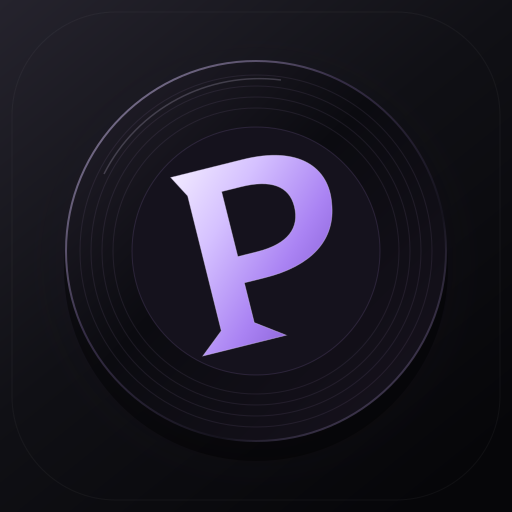

<!doctype html><html lang="ru"><meta charset="utf-8"><meta name="viewport" content="width=device-width,initial-scale=1"><title>Pulse</title><style>html,body{margin:0;height:100%;background:#08080a;color:#f2f0f2;font:15px system-ui}header{height:38px;display:flex;justify-content:space-between;align-items:center;padding-left:16px;-webkit-app-region:drag;color:#aaa}header div{display:flex;-webkit-app-region:no-drag}header button{border:0;background:transparent;color:#ccc;width:46px;height:38px}header button:hover{background:#25252c}main{height:calc(100% - 38px);display:grid;place-content:center;text-align:center;gap:16px}img{width:100px;height:100px;margin:auto}h1{font-size:28px;margin:12px 0 0}p{color:#999;max-width:360px;line-height:1.5;margin:0}main button{background:#a599ff;border:0;border-radius:14px;padding:14px 26px;font:600 15px system-ui;cursor:pointer;margin:10px auto}button:focus-visible{outline:2px solid white;outline-offset:-4px}</style><header><span>Pulse</span><div><button id="min" aria-label="Свернуть">−</button><button id="max" aria-label="Развернуть">□</button><button id="close" aria-label="Закрыть">×</button></div></header><main><h1>Нет соединения</h1><p>Проверь интернет и вернись к своей музыке.</p><button id="retry">Повторить</button></main><script>for(const [id,action]of [['min','minimize'],['max','maximize'],['close','close'],['retry','retry']])document.getElementById(id).onclick=()=>window.pulseDesktop[action]();</script></html>
